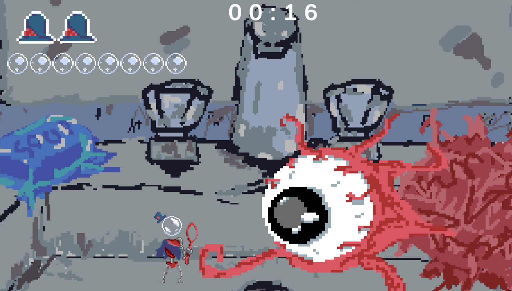
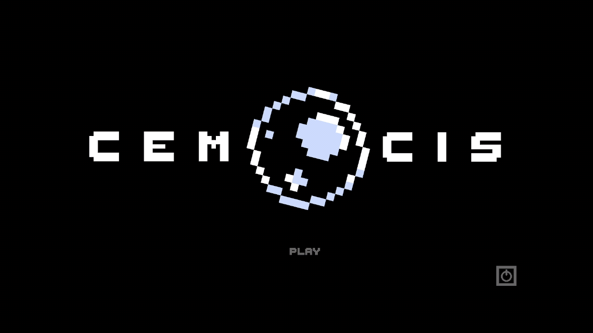
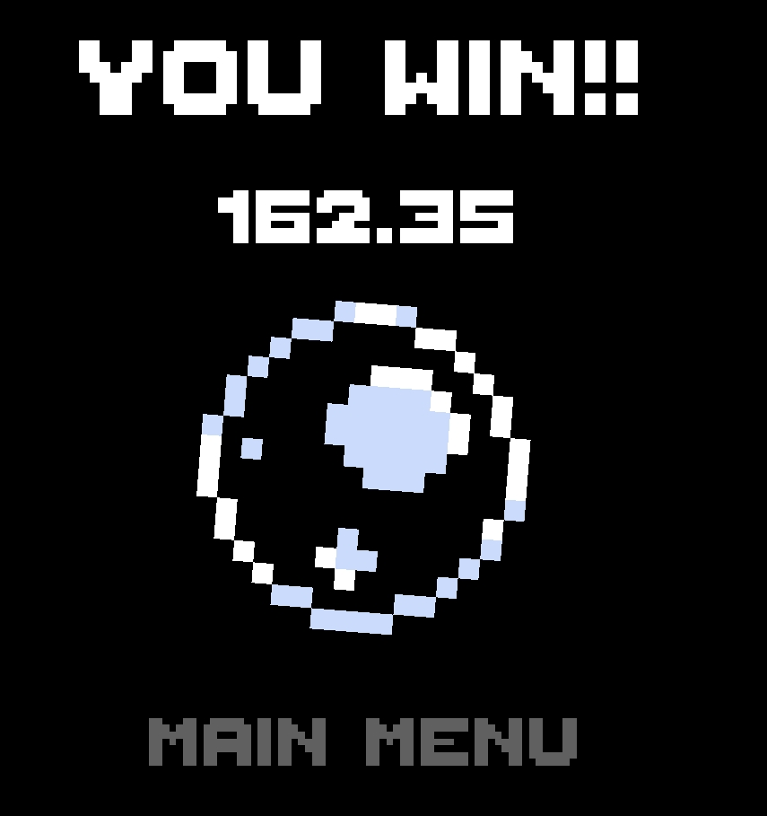
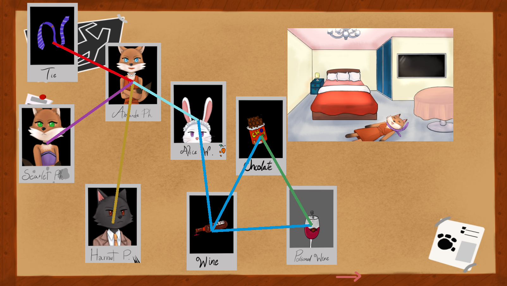

Game Jams

Do you remember when you were a kid and got soap bubbles in your eyes? It stung, didn’t it? Well, now you get to be the bubble and make that eye turn red! Defeat the Eye Boss by blowing bubbles into its eye! You can charge your bubble attack to consume up to 4 gauges, making it stronger but slower. Be careful, your bubble will pop if it gets hit by the boss's attacks!
Working as the game designer, my task was to interpret the "Bubble" theme in a creative direction. Rather than taking a literal approach, I drew from a near-universal childhood experience, getting soap bubbles in your eyes. From that concept, my team and I decided to build a simple boss fight game built around that feeling.
Game Design
- Design Game Concept and Gameplay
- Design Game Mechanics
- Player Attack: Player can charge the bubble to do more damage but it take longer time to travel and damage the boss
- Boss Pattern: Boss have 3 phase base on the its remaining HP. Boss attack will be more frequencely in each phase
- Bubble: Bubble will deal more damage and teavel slower base on its size, also boss attack can pop the bubble
Pixel Artist
All art in the game was created by me. It was my first time creating pixel art intended for use in a game assets rather than standalone portraits, which made the result feel quite rough around the edges, but it was a valuable first step into game-ready art production.

Sub Developer
- Connected the main menu, gameplay, and score scenes together.
- Coded the main menu and score screen logic.



Easy Task is a chaotic casual game about organizing a store shelf. Such a simple task... Nothing can go wrong, right? ...Right?
My friend and I went into this jam with a lighthearted mindset, no pressure and no big ambitions. The result was a simple game with janky physics that was far from polished, but we had a lot of fun making it and that was the point.
Level Design
- Shop Layout
- Define number of object in each section
- Define Object type that should be in the game
Sub Developer
- Coded the main menu and score screen logic.
- Coded the Player movement.
- Contribute in object physics.


You're a newly recruited junior detective named "Owl", under the surveillance of your senior capybara. Both of you need to uncover the murder mystery lurking in this town! Roots of Mystery is a murder mystery, point and click puzzle game. where you need to link the evidence and find out the real culprit behind each murder!
This was my first ever game jam, and going in we put a lot of pressure on ourselves wanting everything to be perfect. The inexperience made the process exhausting at times, but looking back it was one of the most valuable learning experiences I have had, we came out of it knowing so much more than when we started.
Producer
- Managed a team of 5 people and assigned tasks to each member.
- Created the working and rest schedule for the team (though in hindsight it could have been much better).
- Kept team morale up and encouraged members when motivation was low.
Game Designer
- Led the theme interpretation session for "Root" and explored what directions it could take.
- The team landed on a detective board concept where threads and pins connect images together, visually resembling a root system.
- Designed the visual novel structure and puzzle sequence.
- Wrote the story.
2D Artist
Created supporting assets that were not part of the main visual of the game.
